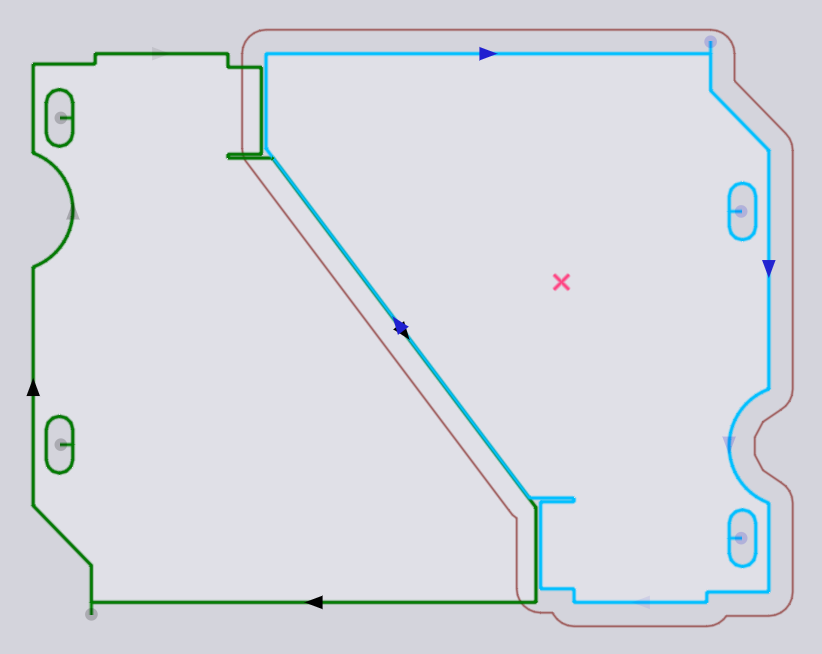

放置面板
已添加的零件（或佈局上的任何現有零件），可使用放置面板進行移動、旋轉或重複，當您點擊零件時會顯示該面板：

-
Left、Bottom、 Right 和Top設定是零件的_邊框_的限制，這些可用於精確定位零件。
-
您也可以點擊零件中心的紅色圓形_手柄_並開始拖動以將其放置在板材上。當您拖動零件時，TecZone Laser 將添加卡入指南，幫助您使用與相鄰零件的精確間隙（橋寬）定位零件。在放置零件時，也會圍繞零件繪製_輪廓_，偏離實際零件輪廓，偏移幅度為橋寬。
-
Angle 設置可用於旋轉零件，由此可嘗試其他方向。當您透過手柄拖動零件時，您也可以按住Ctrl鍵並旋轉滑鼠滾輪，以互動方式旋轉零件。
-
使用Ctrl+單擊以創建零件的副本，然後開始拖動該副本。
-
使用Alt+點擊可垂直鏡像零件， Alt+Shift+點擊可水平鏡像零件。
-
此面板底部有幾個選擇器：
-
點擊轉換以取消選擇所選零件，然後選擇其他所有內容。
-
點擊Similar以選擇_相同的角度_的同一零件的所有副本。
-
點擊Same Parts以選擇同一零件的所有副本（不論旋轉角度如何）。
-
點擊Similar Parts in Row可全選相同角度和相同水平位置的零件。
-
點擊Similar Parts in Column可全選相同角度和相同垂直位置的零件。
-
TwinLine（共用線）放置
使用Shift+單擊開始拖動零件，會將放置切換到_TwinLine_模式 - 當您一起拖動兩個相近的平行邊緣時，TecZone Laser將透過它們之間的精確切口寬度距離把它們卡在一起，以使它們可以作為一條共用線進行切割。以下是一個我們使用Shift+點擊拖動零件時發生卡入的示例：

當滑鼠被釋放時，兩個零件形成一個TwinLine組，其中共用線只切割一次（您可以看到中間對角線處只有一個切割線箭頭）。